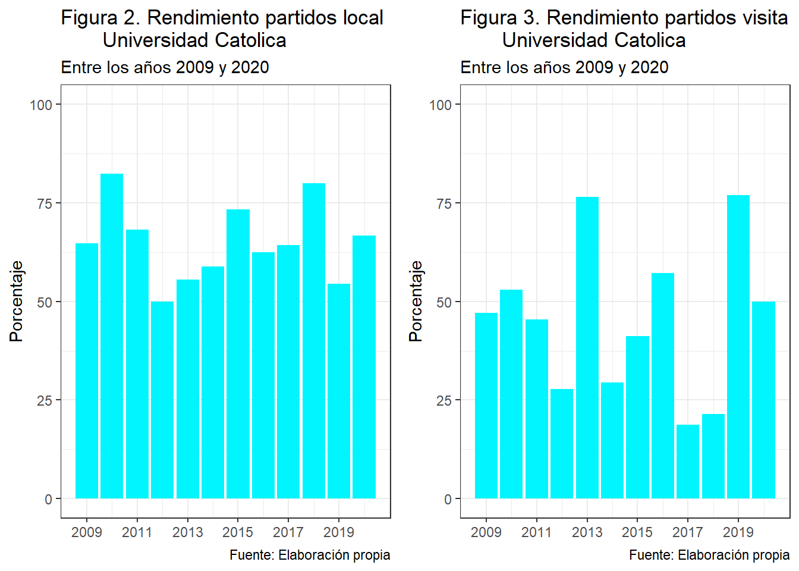
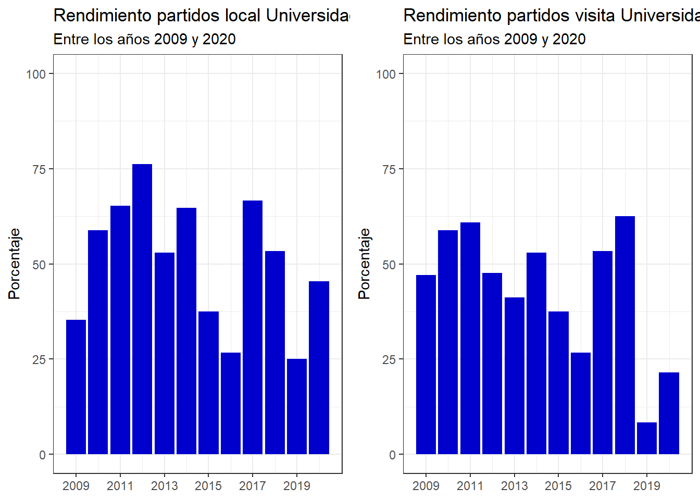

¿Qué equipo del fútbol chileno tienen mejor rendimiento?
Abstract
En este proyecto se analizaran los rendimientos de los equipos más populares del fútbol chileno, se vera en base a sus partidos ganados, perdidos y empatados cual a sido el que posee un mejor promedio, a su vez se veran los enfrentamientos directos entre estos mismos clubes donde veremos como Universidad Catolica es el equipo que a dominado estos enfretamientos entre los años 2009 y 2020.
Introducción
El fútbol en tierras chilenas comenzo en el año 1895 (memoria chilena.gob) cuando los marines e inmigrantes ingleses comenzaron a llegar y deslumbraban a las personas de Valparaiso con su apasionado juego. A partir de eso se comenzo a divulgar y popularisar a lo largo y ancho del territorio nacional, evolucionando hasta como lo conocemos hoy en día llegando a ser el deporte más popular de nuestro país. Si nos centramos en la fama de cada club podemos decir que resaltan tres equipos cuyo nivel de popularidad es mayor (GFK Adimark), estos equipos son Colo-Colo con 42%, Universidad de Chile con 21% y Universidad Católica con 8%.
Los equipos mencionados anteriormente se preguntan: ¿Como le ha ido al club históricamente en los campeonatos?, ¿Como le ha ido al equipo frente a los otros 2 clubes más populares?, ¿Qué equipo es el mejor? responder estas preguntas resulta relevante, ya que nos podría guiar a los resultados que obtendrá el equipo tanto a nivel historico como a futuro.
Para lograr comprender mejor todos estos factores, se realizará un análisis a los datos de los resultados del futbol Chileno desde junio del año 2008 a mayo del año 2021. Se analizarán los factores tanto el juego de local, como el juego de visita, los enfrentamientos directos entre los clubes más populares, a su vez apoyado por la información de ANFP para saber qué equipo salió campeón ese año y si se relaciona con el rendimiento de los equipos analizados.
A modo de esclarecer cómo funciona el futbol chileno, se especificará cada tipo de campeonato que ha ocurrido en Chile. Iniciando por el formato de Playoff, este consiste en que se jueguen partidos todos contra todos solo una vez y se clasifican los primeros 8 a la siguiente fase, donde se enfrentan en partidos de ida y vuelta en llaves iniciando en cuartos de final así sucesivamente hasta llegar a la final, la cual también es a partido de ida y vuelta, a si el campeón se decide con el equipo que gane y/o tenga mejor diferencia de gol en los partidos de la final. El segundo tipo de torneos que se aplicó en el futbol Chileno fueron los torneos de apertura y clausura, en este tipo de torneos se enfrentan los equipos todos contra todos solo una vez, el equipo que consiguió más puntos se consagra campeón. Por último y el formato que tenemos actualmente es el de torneo largo, este consiste en partidos de ida y vuelta todos contra todos y el equipo que consigue más puntos es el que se consagra campeón.
Este proyecto se iniciará con la filtración por año para ver cada uno de los rendimientos de los equipos, luego se hará una comparación a nivel general de a cuál equipo le ha ido mejor a lo largo de los años y si esto se relaciona con la cantidad de campeonatos ganados en esos años. A su vez veremos si estos tienen un rendimiento constante a través de los años. Continuando se realizará una comparativa en los enfrentamientos directos entre los tres equipos antes mencionados. Una vez realizada la comparativa se concluirá ¿cúal de estos equipos es el mejor del futbol chileno entre los años 2009 y 2020? En base a su rendimiento general y rendimiento frente a los otros dos clubes más populares del país.
Preprocesamiento
Antes de iniciar este proyecto se realizara un preprocesamiento de los datos para así poder trabajar de manera mas eficiente. Para ello a la variable Date,que en la base de datos original es de tipo chr, se le aplicara la función dmy de la libreria lubridate para que así la variable Date sea de tipo fecha. Realizado esto nuestra base de datos queda con las siguientes variables:
| Variable | Tipo | Descripcion |
|---|---|---|
| DATE | Fecha | Fecha exacta del Partido |
| HT | Caracter | Nombre del Equipo local |
| AT | Caracter | Nombre del Equipo de Visita |
| HS | Númerica | Goles Equipo Local |
| AS | Númerica | Goles Equipo de Visita |
Inicio Proyecto
Para comenzar el analisis de los datos se creo una funcion que calcula los resultados de los partidos de los equipos, es decir, en cada año se calculo la cantidad de partidos ganados, perdidos y empatados. Esta funcion fue aplicada a los equipos que se analizaran.
Código
puntos <- function(dato){
gano = 0
empa = 0
perdi = 0
for (i in 1:(length((dato$HT)))){
if (dato$HS[i] > dato$AS[i]){
gano = gano + 1
}else if(dato$HS[i] == dato$AS[i]){
empa = empa + 1
}else {
perdi = perdi +1
}}
resultados = c(gano,empa,perdi)
return(resultados)
}Para poder realizar un analisis del rendimiento de estos clubes se creo el siguiente grafico con los partidos ganados:

Así podemos ver la cantidad de partidos ganados por estos clubes. Siendo el año 2013 el cambio de torneo con Playoffs a torneos cortos de apertura y clausura. Notamos que en la era de los Playoffs el equipo que dominó fue Universidad de Chile, la cual entre los años 2009 y 2013 obtuvo 4 campeonatos, seguidos de Colo-Colo y Universidad Catolica ambos con un campeonato en este tipo de campeonatos. En los torneos con Apertura y Clausura podemos obsevar que el equipo con mayor cantidad de partidos ganados fue Colo-Colo. Pero en termino de campeonatos cada equipo obtuvo 2. Llegando a la era de torneos largos podemos decir que el equipo más constante fue Universidad Catolica, junto con que Colo-Colo y Universidad de Chile estuvieron a la baja en terminos de rendimiento.
Dicho esto no podemos decidir que equipo es el que a tenido un mejor rendimiento ya que cada uno de estos clubes a tenido su pick de rendimiento en distintas eras del fútbol Chileno. Para lograr llegar a la respuesta que se busca en este proyecto, analizaremos el rendimiento individual de estos equipos, tanto partidos ganados, perdidos y empatados.
Analisis Individual de los Equipos.
Partiremos analizando el rendimiento de Universidad Catolica, para esto veremos el rendimiento tanto en el juego de local como cuando el partido fue de visita:
Código
años <- c(2009,2010,2011,2012,2013,2014,2015,2016,2017,2018,2019,2020)
p1 <- ggplot(UC, aes(años,Local,fill="turquoise1")) + geom_col() +
scale_x_continuous(breaks = seq(2009,2020,2)) +
scale_fill_manual(values="turquoise1") +
scale_y_continuous(limits = c(0,100)) +
theme(legend.position='none') +
labs(title = "Rendimiento partidos local Universidad Catolica",subtitle = "Entre los años 2009 y 2020", y = "Porcentaje", x = NULL) +
theme_bw() +
theme(legend.position='none')
p2 <- ggplot(UC, aes(años,Visita,fill="turquoise1")) + geom_col() +
scale_x_continuous(breaks = seq(2009,2020,2)) +
scale_fill_manual(values="turquoise1") +
scale_y_continuous(limits = c(0,100)) +
theme(legend.position='none') +
labs(title = "Rendimiento partidos visita Universidad Catolica",subtitle = "Entre los años 2009 y 2020", y = "Porcentaje", x = NULL) +
theme_bw() +
theme(legend.position='none')
grid.arrange(p1, p2, ncol=2)
Podemos notar que Universidad Catolica posee un rendimiento jugando de local bastante constante, en la mayoria de los años poseen un rendimiento sobre el 50% de victorias. Sin embargo cuando les toco jugar de visita este rendimiento no se logro mantener constante tiniendo años muy buenos como lo fueron los años 2013 y 2019 donde obtienen sobre un 70% de victorias. A su vez años malos como lo son los años 2017 y 2018 donde no logran alcanzar el 25% de victorias jugando de visitante.
Para poder comparar estos rendimientos con los demas equipos se mostrara las siguiente tabla:
Código
promediouc <- data.frame(mean(glocal_uc),mean(gvisita_uc)) %>%
gt() %>%
tab_header(title = "Promedio rendimiento UC") %>%
cols_label(mean.glocal_uc. = "Local",
mean.gvisita_uc. = "Visita")
promediouc| Promedio rendimiento UC | |
| Local | Visita |
|---|---|
| 0.6507924 | 0.4537797 |
Ahora generalizaremos los datos, es decir, nos gustaria saber como fue el rendimiento general de Universidad Catolica solo contando sus partidos ganados, perdidos y empatados. Para lograr visualizar esto se creo la siguiente tabla:
Código
tabla_uc <- data.frame(años,cbind(ganados_uc,empatados_uc,perdidos_uc,totales_uc)) %>% gt() %>% tab_header(title = "Rendimiento UC",subtitle = "Entre los años 2009 y 2020") %>%
cols_label(años = "Años", ganados_uc = "Ganados",empatados_uc = "Empatados",perdidos_uc = "Perdidos", totales_uc = "Total Partidos")
tabla_uc| Rendimiento UC | ||||
| Entre los años 2009 y 2020 | ||||
| Años | Ganados | Empatados | Perdidos | Total Partidos |
|---|---|---|---|---|
| 2009 | 19 | 8 | 7 | 34 |
| 2010 | 23 | 5 | 6 | 34 |
| 2011 | 25 | 10 | 9 | 44 |
| 2012 | 14 | 13 | 9 | 36 |
| 2013 | 23 | 6 | 6 | 35 |
| 2014 | 15 | 4 | 15 | 34 |
| 2015 | 18 | 7 | 7 | 32 |
| 2016 | 18 | 6 | 6 | 30 |
| 2017 | 12 | 6 | 12 | 30 |
| 2018 | 15 | 11 | 3 | 29 |
| 2019 | 16 | 5 | 3 | 24 |
| 2020 | 14 | 7 | 3 | 24 |
A modo de resumen, se promedio obteniendo:
Código
promedio_uc <- data.frame(mean(ganados_uc),mean(empatados_uc),mean(perdidos_uc)) %>%
gt() %>%
tab_spanner(label = "Promedio",columns = 1:3) %>%
tab_header(title = "Promedio rendimiento UC") %>%
cols_label(mean.ganados_uc. = "Ganados",
mean.empatados_uc. = "Empatados",
mean.perdidos_uc. = "Perdidos")
promedio_uc| Promedio rendimiento UC | ||
| Promedio | ||
|---|---|---|
| Ganados | Empatados | Perdidos |
| 17.66667 | 7.333333 | 7.166667 |
Podemos notar que su promedio de partidos ganados por año es aproximadamente 18 y su promedio de partidos perdidos es de 7, es decir, pierden pocos partidos por año.
Seguimos con el rendimiento de Colo-Colo. Al igual que con el equipo anterior se iniciara con su rendimiento tanto jugando de local como de visita.
Código
p3 <- ggplot(CC, aes(años,Local,fill="mediumblue")) + geom_col() +
scale_x_continuous(breaks = seq(2009,2020,2)) +
scale_fill_manual(values="gray0") +
scale_y_continuous(limits = c(0,100)) +
theme(legend.position='none') +
labs(title = "Rendimiento partidos local Colo-Colo",subtitle = "Entre los años 2009 y 2020", y = "Porcentaje", x = NULL) +
theme_bw() +
theme(legend.position='none')
p4 <- ggplot(CC, aes(años,Visita,fill="mediumblue")) + geom_col() +
scale_x_continuous(breaks = seq(2009,2020,2)) +
scale_fill_manual(values="gray0") +
scale_y_continuous(limits = c(0,100)) +
labs(title = "Rendimiento partidos visita Colo-Colo",subtitle = "Entre los años 2009 y 2020", y = "Porcentaje", x = NULL) +
theme_bw() +
theme(legend.position='none')
grid.arrange(p3, p4, ncol=2)
Notamos que Colo-Colo no posee un rendimiento constante por sobre el 50% en sus partidos de local como si lo tenia el anterior equipo, ya que en el año 2020 este apenas llega a 25% es más, podemos decir que su rendimiento en el año 2020 ha ido a la baja tanto jugando de local como de visita. Jugando de visita su rendimiento es bastante bajo, ya que, en solo 4 años logra superar el 50%.
Al igual que en caso anterior para lograr comparar estos resultados se creo la siguiente tabla:
Código
promediocc <- data.frame(mean(glocal_cc),mean(gvisita_cc)) %>%
gt() %>%
tab_header(title = "Rendimiento CC") %>%
cols_label(mean.glocal_cc. = "Local",
mean.gvisita_cc. = "Visita")
promediocc| Rendimiento CC | |
| Local | Visita |
|---|---|
| 0.5508064 | 0.4409987 |
Ahora se generalizaremos los datos para los partidos ganados, empatados y perdidos. Para esto se creo la siguiente tabla:
Código
tabla_cc <- data.frame(años,cbind(ganados_cc,empatados_cc,perdidos_cc,totales_cc)) %>% gt() %>% tab_header(title = "Rendimiento CC",subtitle = "Entre los años 2009 y 2020") %>%
cols_label(años = "Años", ganados_cc = "Ganados",empatados_cc = "Empatados",perdidos_cc = "Perdidos", totales_cc = "Total Partidos")
tabla_cc| Rendimiento CC | ||||
| Entre los años 2009 y 2020 | ||||
| Años | Ganados | Empatados | Perdidos | Total Partidos |
|---|---|---|---|---|
| 2009 | 13 | 8 | 13 | 34 |
| 2010 | 22 | 5 | 7 | 34 |
| 2011 | 19 | 7 | 14 | 40 |
| 2012 | 19 | 12 | 11 | 42 |
| 2013 | 13 | 6 | 15 | 34 |
| 2014 | 27 | 4 | 3 | 34 |
| 2015 | 21 | 2 | 8 | 31 |
| 2016 | 14 | 9 | 8 | 31 |
| 2017 | 19 | 7 | 4 | 30 |
| 2018 | 12 | 7 | 11 | 30 |
| 2019 | 11 | 7 | 6 | 24 |
| 2020 | 5 | 7 | 12 | 24 |
Al igual que en el caso anterior se creara una tabla resumen:
Código
promedio_cc <- data.frame(mean(ganados_cc),mean(empatados_cc),mean(perdidos_cc)) %>%
gt() %>%
tab_spanner(label = "Promedio",columns = 1:3) %>%
tab_header(title = "Promedio rendimiento CC") %>%
cols_label(mean.ganados_cc. = "Ganados",
mean.empatados_cc. = "Empatados",
mean.perdidos_cc. = "Perdidos")
promedio_cc| Promedio rendimiento CC | ||
| Promedio | ||
|---|---|---|
| Ganados | Empatados | Perdidos |
| 16.25 | 6.75 | 9.333333 |
Podemos notar que el promedio de partidos ganados de Colo-Colo es de 16 por año, lo cual es menor al promedio de Universidad Catolica. A su vez, Colo-Colo posee un mayor promedio de partidos perdidos, llegando esta a 9 partidos por año.
Y finalmente realizaremos el mismo procedimiento para el club Universidad de Chile, iniciando por ver su rendimiento jugando de local y de visita.
Código
p5 <- ggplot(U, aes(años,Local,fill="mediumblue")) + geom_col() +
scale_x_continuous(breaks = seq(2009,2020,2)) +
scale_fill_manual(values="mediumblue") +
scale_y_continuous(limits = c(0,100)) +
theme(legend.position='none') +
labs(title = "Rendimiento partidos local Universidad de Chile",subtitle = "Entre los años 2009 y 2020", y = "Porcentaje", x = NULL) +
theme_bw() +
theme(legend.position='none')
p6 <- ggplot(U, aes(años,Visita,fill="mediumblue")) + geom_col() +
scale_x_continuous(breaks = seq(2009,2020,2)) +
scale_fill_manual(values="mediumblue") +
scale_y_continuous(limits = c(0,100)) +
theme(legend.position='none') +
labs(title = "Rendimiento partidos visita Universidad de Chile",subtitle = "Entre los años 2009 y 2020", y = "Porcentaje", x = NULL)+
theme_bw() +
theme(legend.position='none')
grid.arrange(p5, p6, ncol=2)Vemos que el rendimiento jugando de local es más inconsistente que el rendimiento de los equipos anteriores teniendo varios años en los cuales no logra superar el 50% de victorias. Se puede ver que jugando de visita su rendimiento esta a la baja, aunque tenga repuntes en los años 2017 y 2018, anteriormente a este sus resultados jugando de visita tendian a la baja.
Código
promediou <- data.frame(mean(glocal_u),mean(gvisita_u)) %>%
gt() %>%
tab_header(title = "Rendimiento U") %>%
cols_label(mean.glocal_u. = "Local",
mean.gvisita_u. = "Visita")
promediou| Rendimiento U | |
| Local | Visita |
|---|---|
| 0.5064948 | 0.4318754 |
Ahora nos centraremos en ver su rendimiento general, para esto se presenta la siguiente tabla:
Código
tabla_u <- data.frame(años,cbind(ganados_u,empatados_u,perdidos_u,totales_u)) %>% gt() %>% tab_header(title = "Rendimiento U",subtitle = "Entre los años 2009 y 2020") %>%
cols_label(años = "Años", ganados_u = "Ganados",empatados_u = "Empatados",perdidos_u = "Perdidos", totales_u = "Total Partidos")
tabla_u| Rendimiento U | ||||
| Entre los años 2009 y 2020 | ||||
| Años | Ganados | Empatados | Perdidos | Total Partidos |
|---|---|---|---|---|
| 2009 | 14 | 10 | 10 | 34 |
| 2010 | 20 | 4 | 10 | 34 |
| 2011 | 29 | 13 | 4 | 46 |
| 2012 | 26 | 8 | 8 | 42 |
| 2013 | 16 | 10 | 8 | 34 |
| 2014 | 20 | 4 | 10 | 34 |
| 2015 | 12 | 7 | 13 | 32 |
| 2016 | 8 | 14 | 8 | 30 |
| 2017 | 18 | 5 | 7 | 30 |
| 2018 | 18 | 4 | 9 | 31 |
| 2019 | 4 | 12 | 8 | 24 |
| 2020 | 8 | 10 | 7 | 25 |
A modo de resumen:
Código
promedio_u <- data.frame(mean(ganados_u),mean(empatados_u),mean(perdidos_u)) %>%
gt() %>%
tab_spanner(label = "Promedio",columns = 1:3) %>%
tab_header(title = "Promedio rendimiento U") %>%
cols_label(mean.ganados_u. = "Ganados",
mean.empatados_u. = "Empatados",
mean.perdidos_u. = "Perdidos")
promedio_u| Promedio rendimiento U | ||
| Promedio | ||
|---|---|---|
| Ganados | Empatados | Perdidos |
| 16.08333 | 8.416667 | 8.5 |
De la tabla anterior vemos que Universidad de Chile posee un promedio de 16 partidos ganados por año, aproximadamente mismo promedio que Colo-Colo, lo mismo sucede con la cantidad de partidos perdidos, ambos promedian aproximadamente 9 partidos perdidos por año.
Comparando todas las tablas con el promedio de los rendimientos de estos equipos podemos decir que Universidad Catolica es el equipo más constante entre los años 2009 y 2020, ya que posee el mejor promedio de partidos ganados de local con un 65%, a su vez que posee el mejor rendimiento jugando de visita con un 45%, tambien posee el mejor promedio de partidos ganados por año con aproximadamente 18 partidos y tiene el promedio más bajo en partidos perdidos con aproximadamente 7 perdidos por año.
Es por esto que Universidad Catolica es el equipo más constante.
Enfrentamientos directos
Ahora bien, este rendimiento ¿Seguira siendo el mejor equipo cuando se ve enfrentado a los otros dos equipos?. Para responder esta pregunta se realizaran tablas en las cuales se vera que equipo tiene el mejor rendimiento a la hora de enfrentarse a sus 2 más grandes rivales.
Se iniciara con el enfrentamiento entre Colo-Colo y Universidad Catolica.
Código
ccvsuc <- Datos %>%
filter(HT == "Colo Colo", AT == "Universidad Catolica")
ucvscc <- Datos %>%
filter(HT == "Universidad Catolica",AT == "Colo Colo")
re <- puntos(ccvsuc)
er <- puntos(ucvscc)
d1<- c(re[1] + er[3],re[2] + er[2],re[3] + er[1])
cc <- c("Ganados CC", "Empatados", "Ganados UC")
tabla <- data.frame(cc,d1) %>% gt() %>%
tab_header(title = "Enfrentamientos directos CC vs UC",subtitle = "Entre los años 2009 y 2020") %>%
cols_label(cc = "", d1 = "Cantidad")
tabla| Enfrentamientos directos CC vs UC | |
| Entre los años 2009 y 2020 | |
| Cantidad | |
|---|---|
| Ganados CC | 8 |
| Empatados | 6 |
| Ganados UC | 12 |
Viendo esta tabla, aunque por una diferencia de 4 partidos, se llega a la conclusion que entre los años 2009 y 2020, Universidad Catolica es el club que a dominado este ya denominado “Clásico”.
Continuaremos con el denominado Superclasico del fútbol Chileno, es decir, los enfrentamientos entre Colo-Colo y Universidad de Chile.
Código
ccvsu <- Datos %>%
filter(HT == "Colo Colo", AT == "Universidad de Chile")
uvscc <- Datos %>%
filter(HT == "Universidad de Chile",AT == "Colo Colo")
ucc <- puntos(ccvsu)
ccu <- puntos(uvscc)
d2 <- c(ucc[1] + ccu[3],ucc[2] + ccu[2],ucc[3] + ccu[1])
cu <- c("Ganados CC", "Empatados", "Ganados U")
tabla2 <- data.frame(cu,d2) %>% gt() %>%
tab_header(title = "Enfrentamientos directos CC vs U",subtitle = "Entre los años 2009 y 2020") %>%
cols_label(cu = "", d2 = "Cantidad")
tabla2| Enfrentamientos directos CC vs U | |
| Entre los años 2009 y 2020 | |
| Cantidad | |
|---|---|
| Ganados CC | 18 |
| Empatados | 6 |
| Ganados U | 4 |
Analisando los resultados de la tabla anterior, llegamos a la conclusion que existe un dominio bastante notorio por parte de Colo-Colo frente a Universidad de Chile, es decir, en enfrentamientos directos Colo-Colo tiene un mejor rendimiento.
Finalizamos con el denominado “Clásico Universitario”, Universidad Catolica contra Universidad de Chile.
Código
ucvsu <- Datos %>%
filter(HT == "Universidad Catolica", AT == "Universidad de Chile")
uvsuc <- Datos %>%
filter(HT == "Universidad de Chile",AT == "Universidad Catolica")
ucu <- puntos(ucvsu)
uuc <- puntos(uvsuc)
d3 <- c(ucu[1] + uuc[3],ucu[2] + uuc[2],ucu[3] + uuc[1])
uc <- c("Ganados UC", "Empatados", "Ganados U")
tabla3 <- data.frame(uc,d3) %>% gt() %>%
tab_header(title = "Enfrentamientos directos UC vs U",subtitle = "Entre los años 2009 y 2020") %>%
cols_label(uc = "", d3 = "Cantidad")
tabla3| Enfrentamientos directos UC vs U | |
| Entre los años 2009 y 2020 | |
| Cantidad | |
|---|---|
| Ganados UC | 12 |
| Empatados | 9 |
| Ganados U | 8 |
Podemos ver que Universidad Catolica es el equipo que predomina en este enfrentamiento. Al igual que contra Colo Colo, la “UC” posee 4 victorias más que su rival.
Esto reafirma lo obtenido en los
Conclusion
Tal como se mostro a lo largo de este informe, vemos que los rendimientos de los equipos a lo largo de los años han sido bastante parejos, tanto en partidos ganamos como en titulos obtenidos.
A partir del analisis individual y del analisis de los enfrentamientos directos de estos equipos, es posible afirmar que el club Universidad Catolica es aquel que posee un mejor rendimiento entre los años 2009 y 2020, basados en el promedio de partidos ganados, empatados y perdidos.
Se sugiere volver a realizar este analisis con los datos y/o resultados de los años 2021 y 2022 con el fin de identificar posibles cambios en el rendimiento individual de los equipos tanto asi como un posible cambio en el equipo con mejor rendimiento.